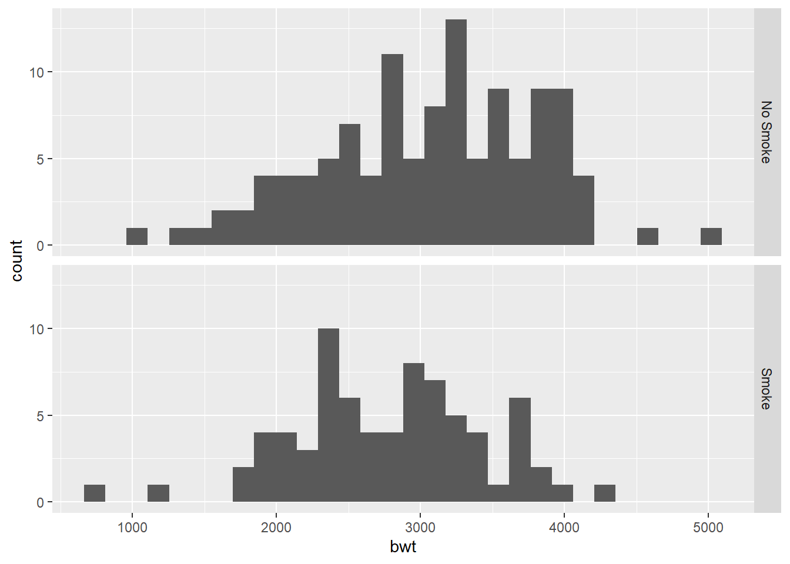

Chapter 2 Probability (to be updated)
Reading: R Cookbook Ch8
2.1 Probability Distributions
| Function | Purpose |
|---|---|
dnorm |
Normal density |
pnorm |
Normal CDF |
qnorm |
Normal quantile function |
rnorm |
Normal random variables |
2.2 Examples
Density of \(N(2, 3^2)\) at \(5\).
\(P(X \leq 3)\), where \(X \sim N(2, 3^2)\)
pnorm(3, mean = 2, sd = 3)
## [1] 0.6305587
# "mean =" and "sd =" are optional
pnorm(3, 2, 3)
## [1] 0.6305587Generate 10 random variables, each follows \(N(3, 4^2)\).
rnorm(10, 3, 4)
## [1] 13.6493715 8.2243045 6.5516917 7.1497842 1.3421600 8.4010430 1.1388874 0.6281746 4.1815016
## [10] 7.194418095th-tile of \(N(0, 1)\). Find \(q\) such that \(P(Z \leq q) = 0.95\)
Table 2.1 describes some common discrete distributions, and Table 2.2 describes several common continuous distributions.
| Discrete distribution | R name | Parameters |
|---|---|---|
| Binomial | binom |
n = number of trials; p = probability of success for one trial |
| Geometric | geom |
p = probability of success for one trial |
| Negative binomial (NegBinomial) | nbinom |
size = number of successful trials; either prob = probability of successful trial or mu = mean |
| Poisson | pois |
lambda = mean |
| Continuous distribution | R name | Parameters |
|---|---|---|
| Beta | beta |
shape1; shape2 |
| Cauchy | cauchy |
location; scale |
| Chi-squared (Chisquare) | chisq |
df = degrees of freedom |
| Exponential | exp |
rate |
| F | f |
df1 and df2 = degrees of freedom |
| Gamma | gamma |
rate; either rate or scale |
| Log-normal (Lognormal) | lnorm |
meanlog = mean on logarithmic scale; sdlog = standard deviation on logarithmic scale |
| Logistic | logis |
location; scale |
| Normal | norm |
mean; sd = standard deviation |
| Student’s t (TDist) | t |
df = degrees of freedom |
| Uniform | unif |
min = lower limit; max = upper limit |
?TDist ?Chisquare
2.3 Simulation
2.3.1 Using the sample function
Usage of sample:
sample(x, size, replace = FALSE, prob = NULL)
See also ?sample.
sample(10) # random permutation of integers from 1 to 10
## [1] 8 1 3 9 2 10 4 6 5 7
sample(10, replace = T) # sample with replacement
## [1] 4 7 5 4 8 4 9 10 5 2
sample(c(1, 3, 5), 5, replace = T)
## [1] 5 3 3 1 5
# simulate 20 random variables from a discrete distribution
sample(c(-1,0,1), size = 20, prob = c(0.25, 0.5, 0.25), replace = T)
## [1] 0 1 1 1 -1 1 -1 -1 -1 -1 -1 -1 -1 -1 -1 -1 1 0 0 0Example: Suppose we have a fair coin and we play a game. We flip the coin. We win $1 if the result is head and loss $1 if the result is tail. You play the game 100 times. You are interested in the cumculative profit.
set.seed(1) # R actually generates pseudo random numbers
# setting the seed ensure that each time you will get the same result (for teaching, code debugging)
profit <- sample(c(-1, 1), size = 100, replace = T)
plot(cumsum(profit), type="l")